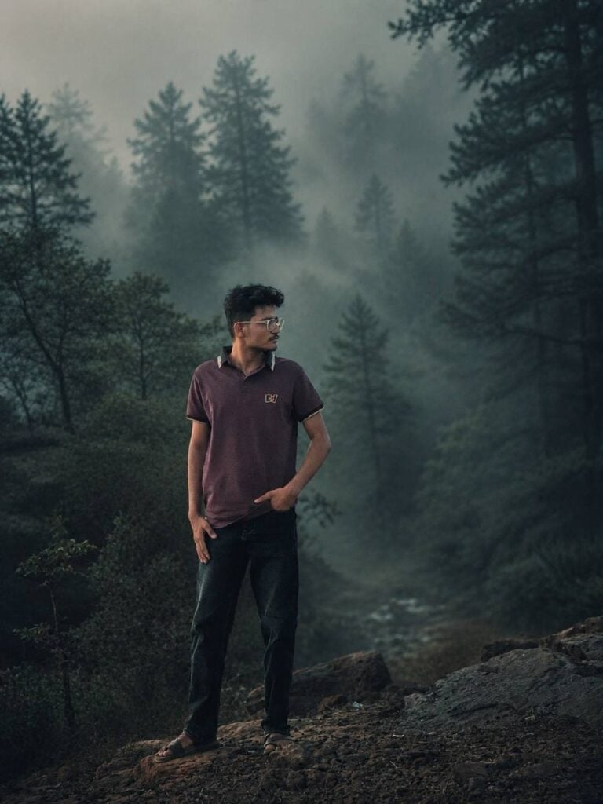

Cinematic photo editing has become one of the most popular visual trends on Instagram, Pinterest, and photography communities. Among all cinematic styles, the Moody Forest Look stands out for its dramatic atmosphere, deep shadows, foggy backgrounds, muted colors, and professional film-like appearance.
The good news is that you no longer need advanced Photoshop skills to create this effect. With the right ChatGPT image editing prompts, you can transform ordinary portraits into breathtaking cinematic forest scenes within seconds.
In this guide, you’ll learn what makes the Moody Forest aesthetic so popular, how to create it using AI image generators, and the best ChatGPT prompts you can use to achieve professional-quality results.
Want more awesome prompts?
Join our community and get the latest viral prompts daily.
Follow on Instagram
What Is a Cinematic Moody Forest Filter?
A Cinematic Moody Forest Filter is a color grading style inspired by modern movies, outdoor adventure photography, and cinematic reels.
Its key characteristics include:
- Dark green pine forest backgrounds
- Cool green and grey tones
- Low saturation colors
- Soft matte finish
- Deep shadows and faded blacks
- Atmospheric fog and haze
- Strong subject separation
- Subtle film grain
- Dreamy depth of field
- Professional cinematic look
This editing style creates a mysterious, emotional, and storytelling-focused atmosphere that instantly grabs attention.
Why Is This Style Trending?
Content creators, photographers, and influencers use moody forest edits because they:
1. Create Emotional Impact
The dark and atmospheric environment adds depth and emotion to portraits.
2. Look Professional
The cinematic grading resembles scenes from high-budget films and Netflix productions.
3. Increase Social Media Engagement
Images with strong visual storytelling often receive higher engagement rates compared to standard edits.
4. Work With Almost Any Portrait
Whether you’re editing selfies, fashion photos, travel portraits, or outdoor shots, the moody forest style can dramatically enhance the image.
Essential Elements of a Cinematic Forest Edit
To achieve the perfect cinematic forest look, your prompt should include the following elements:
Color Palette
- Teal green
- Olive green
- Cool grey
- Muted earth tones
Lighting
- Soft natural light
- High subject contrast
- Controlled highlights
- Deep shadows
Atmosphere
- Light fog
- Background haze
- Dreamy depth
- Forest mist
Texture
- Matte finish
- Faded blacks
- Subtle film grain
Combining these elements creates a realistic and visually appealing cinematic effect.
Best ChatGPT Prompt for Cinematic Moody Forest Filter
Use the following prompt when editing portrait photos:
Prompt
“Cinematic moody forest color grading, dark green pine forest background, muted colors, soft matte finish, deep shadows, low saturation, foggy atmosphere, cool green and grey tones, faded blacks, high contrast subject, subtle film grain, dreamy depth, soft natural light, teal and olive color palette, professional reel look, aesthetic Instagram cinematic edit, ultra realistic, sharp subject, background haze, 4K quality.
IMPORTANT: Keep the exact same person, face, hairstyle, pose, body shape, and clothing unchanged. Preserve all outfit details exactly as in the original image. Only apply cinematic color grading and atmospheric forest background. No wardrobe changes, no costume modifications, no facial alterations.”
Tips for Better Results
Use High-Resolution Photos
The better the original image quality, the more realistic the cinematic effect will appear.
Choose Clear Portraits
Photos with visible facial details generally produce cleaner results.
Specify Clothing Preservation
Always mention that the outfit must remain unchanged if you want the original look preserved.
Include Background Details
Adding keywords such as:
- pine forest
- mountain fog
- forest haze
- cinematic depth
- atmospheric mist
helps the AI generate more realistic scenery.
Advanced Prompt for Professional Creators
For an even more cinematic look, try this enhanced version:
“Cinematic forest photography, dark evergreen forest, dramatic atmospheric fog, teal and olive cinematic color grading, low saturation, faded blacks, matte finish, volumetric light rays, realistic depth of field, ultra-detailed portrait, sharp facial features, subtle film grain, professional movie scene, moody storytelling aesthetic, soft natural lighting, background haze, realistic forest environment, high-end color grading, 4K ultra realistic.”
Common Mistakes to Avoid
Over-Saturated Greens
Too much green can make the image look artificial.
Excessive Fog
A small amount of haze creates atmosphere without hiding important details.
Harsh Lighting
The moody aesthetic works best with soft and natural lighting.
Ignoring Subject Sharpness
Always keep the subject sharp while allowing the background to remain slightly blurred.
Who Should Use Moody Forest AI Prompts?
This style is perfect for:
- Photographers
- Instagram Creators
- Travel Bloggers
- Fashion Influencers
- Digital Artists
- Content Creators
- YouTubers
- Pinterest Publishers
It can also be used for thumbnails, social media banners, blog headers, and portfolio images.
Final Thoughts
The Cinematic Moody Forest Filter remains one of the most powerful editing styles for creating emotional, professional-looking portraits. With modern AI tools and ChatGPT prompts, anyone can achieve stunning movie-like visuals without spending hours in Photoshop or Lightroom.
By combining cool green tones, foggy atmospheres, deep shadows, and subtle film grading, you can transform ordinary photos into dramatic cinematic masterpieces that stand out on Instagram, Pinterest, blogs, and YouTube.
If you’re looking to elevate your photo editing game, the Moody Forest aesthetic is one of the best AI-powered styles to add to your creative toolkit.